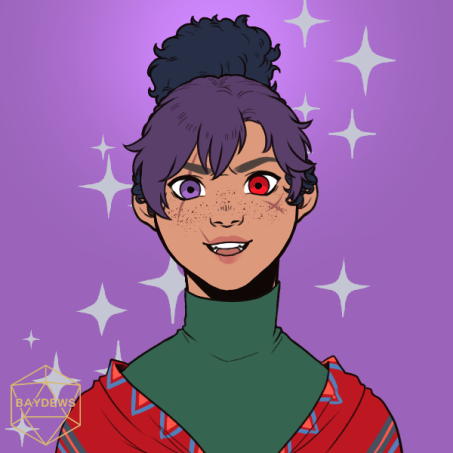

RBTW's NEW CAMPAIGN: They Slash Them, Session 1!
Well, boys - let's roll! Last saturday morning, October 29, the Rolling With The Boys (RWTB) party gathered in a voice call and rolled, played, and roleplayed for two hours straight, all filled with excitement and pure, unadulterated joy for the very first session of their very first campaign as their very own group! And, gods, what a first session it was! My session notes were just 85% incoherent screaming and 15% actual notes from the session; that's just how amazing the session was!
Okay, I should probably talk about the actual session instead of just talking about how Cool and Awesome it was. In all honesty, not much happened during then, if you compared to other campaigns' first sessions', but I think it had twice as much charm as any ordinary first session could have. Of course, I could just be saying that since I was actually, y'know, part of the session, but hey. Point still stands.
Gods, I really need to stop rambling and get to the whole meat of things, shouldn't I? Haha.
So! Characters! As with every first session, there comes the party's character introductions! I'll do things chronologically, starting off with the first character introduced.
First off, we have Cyran Thornton! The certified Mom Friend played by our certified Mom Friend, Blue! They're a half elf tavern owner multiclassing as a Level 2 Rogue and a Level 1 Bard (we're all starting on Level 3, so). They stand at a towering 6-foot-something tall, an already intimidating figure only made more intimidating by the pirate eyepatch completely covering one of their eyes. They've got a loveable sidekick in the form of Nox, a beloved, obsidian-skinned kobold with a Boston accent! He helps around Cyran's tavern and his favorite hobby is to describe people's personalities with fruits! The entire party immediately fell in love with him, from the very first word he spoke. Kip, Mx. DM, you actual godsend.

Next character introduced is my character, Morria Mellows! They're a tiny, little, absolutely miniscule three-foot
halfling sorcerer with a purple-blue ombre for hair and heterochromatic purple-red eyes. They've been travelling the road for many-a-year, now, and after a
long day's worth of walking nowhere, anywhere, their staff in hand, they ended up in Cyran's own tavern. Who knows what great adventure will befall them,
this time, and if it's going to be better or worse than the ones they've already been through? Only god - and time - can tell.
Next up, we have the resident sweatheart, Bear Graylock, played by no one else but our resident sweetheart artist, Gee! Bear, over
here, is a bright blue monk tiefling with bandages all over his wherever, not because he's severely injured, but rather because of the aesthetic.
He's got snow-white hair and an equally bright smile, and he has absolutely no idea about what is going on in the world around him. At best, his
confusion and naivete is nothing short of adorable, but at worst, it's downright concerning and scary. Y'know what else is scary about him? His energy.
He's way too energetic. He terrifies me Morria.
And last, but definitely not the least, we have Belle Mer, played by my one and only Pan! Unfortunately, he wasn't able
to attend this session, so he wasn't able to play his character, but she was definitely present. I'll elaborate later on. Wink-wink. Did
I seriously just wink? In text?! Good lords, May. Good lords.
OKAY! FINALLY! THE ACTUAL EVENTS! Which aren't much but still!
The (presently present) party meet in Cyran's tavern, warmly welcomed by none other than Nox the Kobold himself. Cyran hands an alcohol-familiar Morria the strongest drink in the establishment (a shot of Pain that costs one gold; Morria didn't even flinch as they downed it in one gulp) and an alcohol-clueless Bear a shot of mead (one whole silver piece spent all for poor Bear to spit it out in disgust; what a shame). Nox makes good comedic relief, good friends make good bits, and all is well inside the Thornton tavern. That is, until--
CRASH!
Nox noisily bursts through the doorway, panting and panicking as if his life depended on it! Through heaving breaths, he managed to relay the information to everyone that- huh? What? There's a body on the beach?!
Cyran demands the entire tavern to clear out easily and immediately runs out of the tavern, with Morria and Bear right at their heels. The Thornton Tavern sits just a few ways away from a sandy beach and a salty sea, so it doesn't take them long to reach the mentioned beach, where the mentioned body was supposedly found by Nox.
To make the most of our time and perceptive abilities, the three choose to split up and cover as much ground as possible. Cyran runs to the west, Bear runs the opposite way just for the heck of it, and Morria, just for the bit, runs straight into the water. Because why wouldn't they, a three-foot halfling, the smallest of the party, run straight into the water.
Morria looks back at the beach from where they stand (in the water) and roll a... natural 1 for a perception check.
Huh, wait what? DM- DM, DM, DM, DM, DM. DM! I use my halfling racial trait Lucky and reroll. Please- no, no, no, no, look!
See, here, it says: When you roll a 1 on the d20 for an ability check, you can reroll the die and must use the new roll. See? See! YEAH! Thanks, DM!
Morria looks back at the beach from where they stand (in the water) and roll a twenty (including modifiers) for a perception check. They see a... sort of lump? A few ways from an oblivious Bear?
They cast Prestidigitation and amplify their voice, calling for Bear to "WATCH OUT!". Of course, practically everyone hears their voice, causing Bear to instinctively duck in surprise, and for Cyran to quickly dash their way to the blue tiefling. Sooner than later, everyone's gathered and with each other once more, searching their surroundings for the Lump that Morria found.
With the collective perceptive abilities of everyone in the (presently present) party, it doesn't take them long to find the Lump. Which, of course, happens to be - who would've expected -
A body.
However, it isn't the sort of body most would be familiar with. Instead of the smooth, slightly-hairy skin typically found in humans and other similiar species, the body's skin is a blue-green color, slick with water and covered with fish-like scales. The figure's hair is a bright green ponytail, slightly messed up from gods-know-what. The figure is wearing a white wetsuit that covers most of their (her?) body, accentuating the slim, nearly malnourished state of their body.
That's Pan's character, Belle, but shh. Wink-wink.
Cyran's instincts get the better of them and they immediately move to lift and carry the clearly-hurt body, much to Morria's dismay and
paranoia. Something sparks up inside the halfling that makes them kick poor Cyran's shin, expressing their reluctance to just suddenly accept this,
this - what's it called? A triton? Screw that, Morria's never met a triton in the flesh in their many years of travel, and they can't help but feel
a bit paranoid. Out of character, my friends jest that Morria's a racist. Ha, ha, very funny.
A bit annoyed, Cyran, being the actually reasonable member of the party, tells Morria to stop judging people, especially if they're, you know, unconscious and in dire need of help. Okay, fair. Morria lags a bit behind the party as the three (four?) make their ways back to the tavern.
Cyran succeeds several medicine and survival checks for the unconscious triton's sake, who is now sleeping soundly inside Cyran's own bed in the tavern. Bear's outside in the tavern's garden-park-backyard... thing... and picks off a few flowers to give as a gift to the triton once she wakes up. Morria's in the main part of the tavern, having a conversation with Nox about how Cyran really isn't that intimidating and how they're actually a sweetheart and how they're like a pineapple and oops. Cyran heard that one. Okay, guess Nox will just leave his handmade apple cider with Morria. It tastes nice.
Before Nox leaves Morria be with their thoughts, however, Morria asks the kobold to hand a something to the scary tall half-elf with an eyepatch. It's a note, which says in shaky, terrible handwriting: "Tell me if she wakes up! ♥ Morria". Of course, being the absolute sweetheart that he is, Nox awwwwwws and immediately brings it up to the scary tall half-elf with an eyepatch themself.
Cyran reads the note and rushes downstairs to a pensive Morria, and offers them a free room with a red-flushed face. The halfling accepts, very much mirroring the color in the other's face. Cyran rushes upstairs after that awkward as [REDACTED] interaction, leaving a wide-eyed, furiously reddening Morria.
As soon as Cyran closes the door of their room (well, the triton's room, as of now) behind them, the bed stirs.
The half-elf moves closer, concerned, intrigued, then-
The triton opens her eyes.
And the session ends.
SEE! I TOLD YA! It was an AMAZING first session, at least to my standards (and if the reactions of my friends were any indication, it was an amazing first session for them, too)! I had so, so, SO much fun playing my character and seeing my friends having so much fun with their characters, and our DM, Kip, was amazing in DMing their very first campaign! I know that I'm not alone in being so gosh darned excited for our next session and our next sessions to come, as this first session alone exceeded my expectations and delivered much, much more!
That's all I've got for now! Stay tuned for our next session - and this time, I mean that literally, since I'll definitely going to be documenting our next
session as well! Kidding, I probably won't. Sorry, sir, our next session isn't taking place until after our exams.
See ya'll! Morria May out!